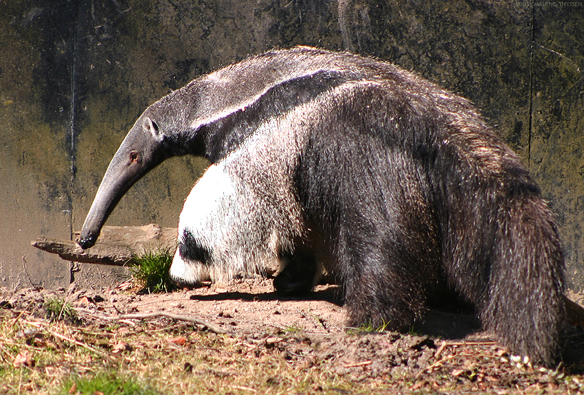

Tamanduá bandeira
Nome científico: (Myrmecophaga tridactyla Linnaeus, 1758)
Nome comum: Tamanduá bandeira.
Classificação biológica:
Domínio: Eukaryota.
Reino: Animalia.
Filo: Chordata.
Classe: Mammalia.
Ordem: Pilosa.
Família: Myrmecophagidae.
Gênero: Myrmecophaga.
Espécie: Myrmecophaga tridactyla.
Nutrição: Insetívoro.
Hábitos alimentares: Alimenta-se principalmente de formigas e cupins, utilizando sua longa língua pegajosa para capturá-los.
Morfologia do corpo: Possui corpo robusto, focinho alongado, língua extensa e pegajosa, além de uma cauda longa e peluda. Pode medir até 2,2 metros de comprimento e pesar entre 30 e 45 kg.
Comportamento: Animal solitário e terrestre, desloca-se lentamente, mas pode correr quando necessário. Possui grandes garras para cavar cupinzeiros e se defender.
Principais Alimentos: Formigas e cupins.
Principais Predadores: Onças, pumas e seres humanos (desmatamento e caça ilegal).
Locais habitados
Distribuição:Vive nos biomas Cerrado, Pantanal, Mata Atlântica e Amazônia.

Habitat: Habita savanas, cerrados, florestas tropicais e áreas abertas.
Reprodução: A gestação dura cerca de 180 dias, resultando no nascimento de um único filhote, que é carregado nas costas da mãe até cerca de um ano de idade.